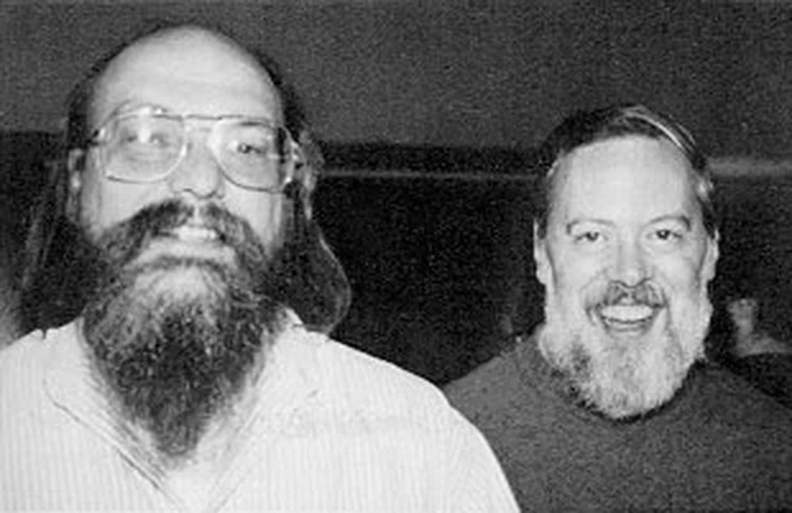
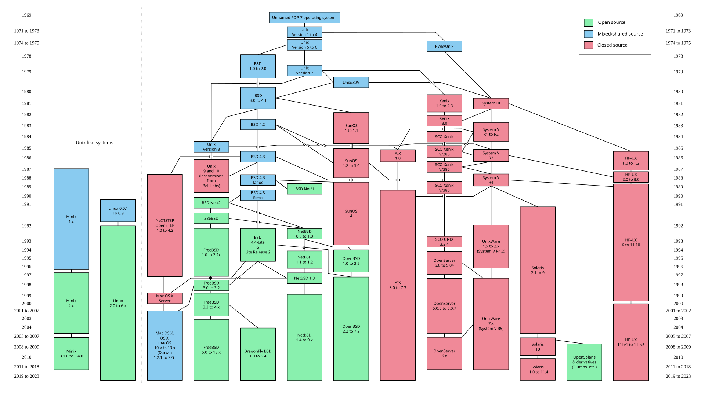
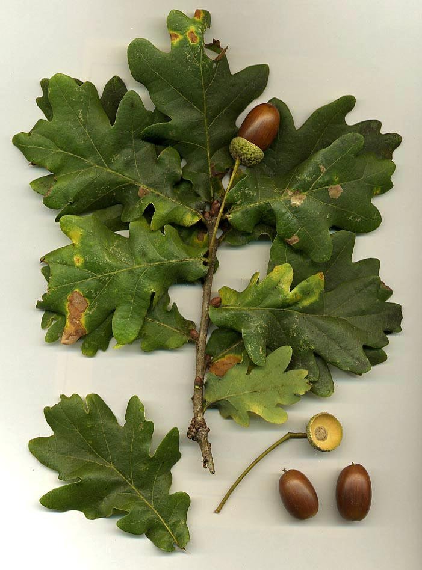

LINUX FROM ZERO
06
Lesson 06
Unix is the grandparent.

Bell Labs, 1969
Unix
Ken Thompson and Dennis Ritchie. The family starts here.

Family tree
Cousins
Linux cloned the ideas. It is not a Unix sticker on this disk.

A Unix idea
A tree of files
Names hang from a root. This machine still does that.

This grandchild
This Linux box
Still speaks Unix ideas: a file tree, and users.
Match the tree and the users on this computer.
File tree